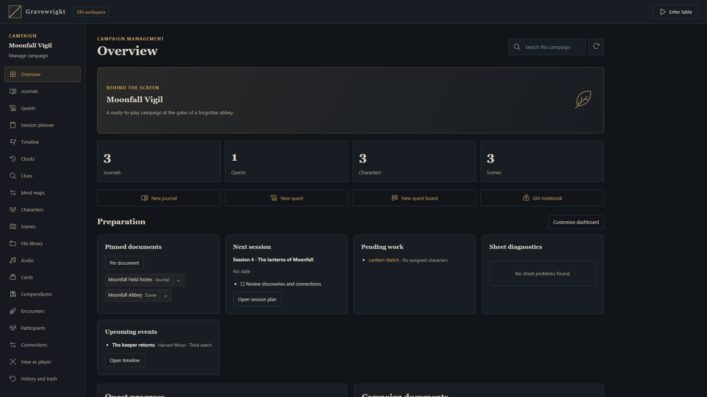

Campaigns, invitations and players
Create a campaign, invite people and distinguish player accounts from spectator links.

Create the campaign
The installation owner creates campaigns in the campaign library at /inside. Choose a meaningful name, cover and system appropriate to your sheets. Open the campaign to prepare its tabletop. A campaign keeps its own membership and resources; joining one does not grant access to another.
The built-in Gravewright PDF System is a general sheet foundation. Other RPG systems are installed separately. Confirm compatibility before building a campaign around an optional package.
Choose or change the cover
Open campaign creation or editing in the library. Fill in the campaign fields and choose the cover source: From computer or By URL. Local images support PNG, JPEG or WebP, up to 5 MB.
For a local image, drag it onto the upload area or focus the file control and activate it with the keyboard. The operating system's file picker still opens when choosing a file. For a URL, use the URL field instead.
Inspect the preview before saving. Remove image clears a newly selected image or an existing saved cover. Selecting the already active source again keeps the current image; changing the source clears that selection so you can choose its replacement.
Save the form and check the campaign card. If validation fails, correct the indicated field and submit again.
Campaign dialogs and the other host forms use the same themed fields, upload controls, focus and error states. On a narrow screen, scroll within the modal to reach its actions. Actor and folder creation also use application modals: Cancel closes without creating the resource, and controls pause while saving. Keep the form open until success or a useful error appears.
Invite a player
Ask the player to register at /register, or log in at /login if they already have an account.
As campaign GM, create an access code and choose its validity and maximum uses.
Give the player the host address and the code through your usual private channel.
Have them join the campaign, then check their membership and assign the appropriate actor and document access.
Revoke the code when it is no longer needed.
Successful entry by a new member increments the code's use count. If joining fails, check expiration, revocation, remaining uses and the campaign associated with the code. An account on the server does not automatically become a member of every campaign.
Prepare for the session
Choose Manage campaign on the campaign card to prepare its native documents, sheets and planning tools without entering the table. The campaign manager is available to campaign GMs, including co-GMs; it does not broadcast a scene or create table presence.
Use folders and clear names for scenes, actors and journals. Prepare private scenes without broadcasting them; activate the intended scene when the group is ready. If lobby/readiness controls are enabled, use them to coordinate the start.
Use spectator access deliberately
A streamer link is restricted read-only access. It does not replace a player account and cannot edit the campaign or its Map Builder projects. Test what the spectator actually sees before broadcasting; private GM preparation and player document permissions still need deliberate configuration.
To troubleshoot a missing actor or journal, check resource access after confirming membership. To troubleshoot a missing map, check scene visibility and the current broadcast. See Permissions for a practical rehearsal.
More screenshots for this guide (1)

